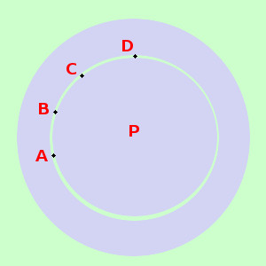

|
sviluppo dire se il seguente insieme e' ordinato, e' bene ordinato oppure no insieme dei punti del piano cartesiano la cui distanza da un punto fisso sia minore di 2 con la relazione "l'elemento a e' a distanza minore od uguale dell'elemento b rispetto al punto fisso"  L'insieme e' formato dai punti del piano interni al cerchio aperto di centro il punto fisso P e di raggio 2 l'insieme non e' ordinato secondo la relazione data perche' se prendo come sottoinsieme ad esempio quello formato dagli elementi A,B,C,D questo e' un sottoinsieme poroprio che non e' ordinabile perche' tutti i punti considerati hanno la stessa distanza da P |